Label shared continuous x coordinates by facet
Source:R/scale-facet-labels.R
scale_x_facet_labels.Rdscale_x_facet_labels() supplies continuous x-axis labels for each named
facet value. facet may be a bare column name or a one-element
column-name string, and labels is a named list whose entries provide the
labels for each facet. Labels are not inferred from geom data, so their
order must correspond to breaks. Add this helper after ggplot2::facet_grid()
or ggplot2::facet_wrap() with fixed x scales. All panels share the same
trained x range; only their axis labels differ. This preserves compatibility
with ggplot2::coord_fixed(). For a grid, facet must identify columns,
because each column shares an x axis. Unlisted facets retain numeric labels.
Wrapped facets show an x axis in every panel so each label mapping is visible.
Usage
scale_x_facet_labels(
facet,
labels,
breaks = NULL,
limits = NULL,
expand = ggplot2::expansion(mult = 0),
...
)Arguments
- facet
A bare facet column or a one-element string naming that column.
- labels
A non-empty named list of non-empty character vectors, one for each facet value.
- breaks
Numeric break positions. When
NULL, uses sequential positions matching the length of the label vectors.- limits
Optional increasing numeric x-axis limits. Like ordinary scale limits, these can remove data before layout. With
strip_scale_x(), omit this argument to use the complete slot template's computed range.- expand
Expansion specification passed to
ggplot2::scale_x_continuous().- ...
Additional arguments passed to
ggplot2::scale_x_continuous().
Examples
data <- data.frame(
cluster = rep(c("A", "B"), each = 2),
x = rep(c(1, 2), 2),
y = 0
)
ggplot2::ggplot(data, ggplot2::aes(x, y)) +
ggplot2::geom_point() +
ggplot2::facet_grid(. ~ cluster) +
scale_x_facet_labels(
cluster,
labels = list(A = c("A2", "A1"), B = c("B2", "B1"))
) +
ggplot2::coord_fixed(ratio = 1)

hox_labels <- list(
HoxA = paste0("HOXA", 1:15),
HoxB = paste0("HOXB", 1:15)
)
scale_x_facet_labels("cluster", labels = hox_labels, limits = c(0.5, 15.5))
#> $facet
#> [1] "cluster"
#>
#> $labels
#> $labels$HoxA
#> [1] "HOXA1" "HOXA2" "HOXA3" "HOXA4" "HOXA5" "HOXA6" "HOXA7" "HOXA8"
#> [9] "HOXA9" "HOXA10" "HOXA11" "HOXA12" "HOXA13" "HOXA14" "HOXA15"
#>
#> $labels$HoxB
#> [1] "HOXB1" "HOXB2" "HOXB3" "HOXB4" "HOXB5" "HOXB6" "HOXB7" "HOXB8"
#> [9] "HOXB9" "HOXB10" "HOXB11" "HOXB12" "HOXB13" "HOXB14" "HOXB15"
#>
#>
#> $breaks
#> [1] 1 2 3 4 5 6 7 8 9 10 11 12 13 14 15
#>
#> $scale
#> <ScaleContinuousPosition>
#> Range:
#> Limits: 0.5 -- 15.5
#>
#> attr(,"class")
#> [1] "ggexon_facet_labels_spec"